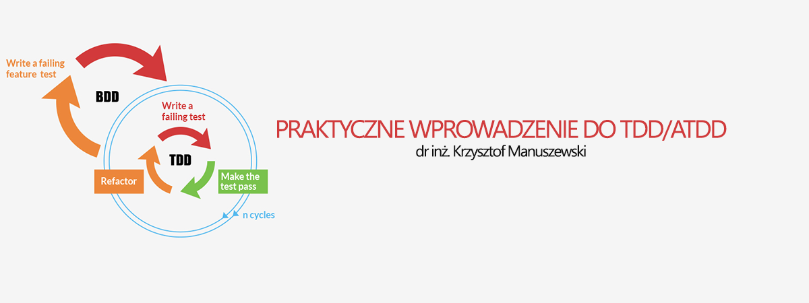

PRAKTYCZNE WPROWADZENIE DO TDD
18:00 17.12.2015 Aula 2 Wydział MFI Uniwersytet Gdański, Wita Stwosza 57 Gdańsk
Zapraszamy na długo wyczekiwaną 2. część zajęć z dr. inż. Krzysztofem Manuszewskim!
Posłuchamy o tym jak wprowadzić w życie poznane zasady.
Będzie więcej o SOLID, o tym jak wygląda i jak napisać dobry test jednostkowy!
Uwaga: Spotkanie tym razem odbędzie się w AULI 2.
Agenda
- Elementy testu jednostkowego.
- Czym różnią się złe testy od dobrych.
- Testowanie stanu/zachowania - obiekty Namiastek (Mock).
- Strategia tworzenia testów.
- Jak pisać kod, aby był łatwo testowalny.
- Zasady SOLID.